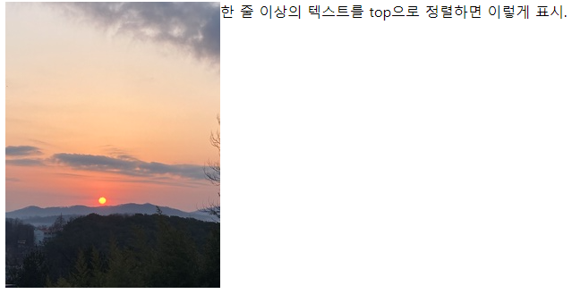
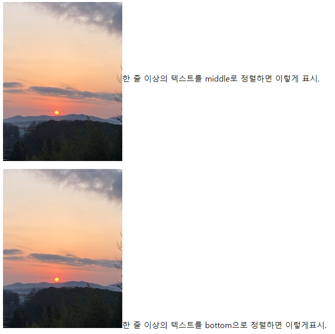

1. <img> 태그로 이미지 삽입하기 ① img src=“”로미지 넣기, alt=“”로 이미지 주석처리, border=“”로 그림 테두리 효과, vspace=“”. hspace=“”로 이미지 주위에 여백 효과, width="" height=""로 이미지의 사이즈 조정 <img src="sample240x320.jpg" alt="해 뜨는 이미지" border="5" vspace="20" hspace="20" width="240" height="320">해 뜨는 이미지<br> HTML 적용 시 해 뜨는 이미지
그림이 안 보이는 경우 브라우저의 옵션 설정에서 그림을 표시하도록 설정되어 있지 않을 때 지정된 위치에 이미지가 없을 때 이미지 이름이 잘못 지정되었을 때 alt=“” 이미지가 보이지 않는 사용자를 위해 사용 border=“” 이미지의 테두리 두께를 픽셀로 지정 ② 가운데 이미지 넣기 <center> <h2><font color="Green">웹프로그래밍 홈페이지</font>에 오신 것을 환영합니다.</h2> <img src="sample240x320.jpg"> </center> <hr> © copyleft 2022. 웹프로그래밍 HTML 적용 시웹프로그래밍 홈페이지에 오신 것을 환영합니다.
© copyleft 2022. 웹프로그래밍 ③ align을 이용한 텍스트와 이미지 정렬 <img src="sample240x320.jpg" align="top">top으로 정렬하면 이렇게 표시.<p> <img src="sample240x320.jpg" align="middle">middle로 정렬하면 이렇게 표시.<br> <img src="sample240x320.jpg" align="bottom">bottom으로 정렬하면 이렇게 표시. img 태그의 속성 src : 삽입하려는 이미지의 위치를 지정하는데 사용 align : 이미지와 텍스트를 정렬 top : 텍스트가 이미지 상단에 맞추어 정렬 middle : 텍스트가 이미지 중간 부분에 맞추어 정렬(수직) center : 텍스트가 이미지 중간에 맞추어 정렬(수평) bottom : 텍스트가 이미지 하단에 맞추어 정렬 left : 이미지가 텍스트의 왼쪽으로 배치 right : 이미지가 텍스트의 오른쪽으로 배치 alt : 이미지가 안 보일때를 대비하여 이미지에 대한 설명 표시시 사용 border : 이미지 주위에 테두리 표시, 두께를 픽셀로 지정 vapace/hspace : 이미지 주위에 여백 설정시 사용 vspace : 이미지의 위쪽과 아래쪽에 지정한 필셀만큼 여백 설정 hspace : 이미지의 왼쪽과 오른쪽에 지정한 필셀만큼 여백 설정 width/heigth : 이미지 크기 명시하거나 다르게 조정하려는 경우 그 너비와 높이를 픽셀로 지정 [예] <img src="sample240x320.jpg" align="top">한 줄 이상의 텍스트를<br> top으로 정렬하면 이렇게 표시.<p> <img src="sample240x320.jpg" align="middle">한 줄 이상의 텍스트를<br>middle로 정렬하면 이렇게 표시.<p> <img src="sample240x320.jpg" align="bottom">한 줄 이상의 텍스트를<br>bottom으로 정렬하면 이렇게 표시.<p> HTML 적용 시   [예] <img src="sample240x320.jpg" align="left">한 줄 이상의 텍스트를 left로 정렬하면 이렇게 표시. 앞의 top, middle, bottom의 경우와 비교해 보세요.<br><br><br><br> <img src="sample240x320.jpg" align="right">한 줄 이상의 텍스트를 right로 정렬하면 이렇게 표시. 앞의 top, middle, bottom 의 경우와 비교해 보세요. </body> HTML 적용 시 한 줄 이상의 텍스트를 left로 정렬하면 이렇게 표시. 앞의 top, middle, bottom의 경우와 비교해 보세요. 한 줄 이상의 텍스트를 right로 정렬하면 이렇게 표시. 앞의 top, middle, bottom 의 경우와 비교해 보세요.
2. <video> 태그로 동영상 넣기 <video width="" controls="controls"> <source src="sample640x360.mp4" type="video/mp4"> </video> <video width="" controls="controls" src="sample640x360.mp4" type="video/mp4"> </video> HTML 적용 시 3. <audio> 태그로 음악 넣기 <audio controls="controls"> <source src="src/sample.mp3" type="audio/mp3"> </audio> <audio controls="controls" src="src/sample.mp3" type="audio/mp3"></audio> HTML 적용 시 4. <a href> 태그로 링크 설정 ① 같은 폴더에 있는 링크할 문서 지정 <a href="test.html"></a>이곳을 클릭하면 test 페이지로 이동합니다.</a> HTML 적용 시 이곳을 클릭하면 test 페이지로 이동합니다. ② 다른 폴더에 있는 링크할 문서 지정 <a href="../test.html"></a>이곳을 클릭하면 test 페이지로 이동합니다.</a> <a href="src/test.html"></a>이곳을 클릭하면 test 페이지로 이동합니다.</a> 대상화일이 상위 폴더에 있는 경우 : a href="../test.html" 대상화일이 하위 폴더에 있는 경우 : a href="xxx/test.html" ③ 다른 웹페이지 연결 <a href="http://google.com"></a>이곳을 클릭하면 구글 홈페이지로 이동합니다.</a> HTML 적용 시 이곳을 클릭하면 구글 홈페이지로 이동합니다. ④ 이미지에 링크 설정하기 <a href="http://www.google.com"> <img src="sample240x320.jpg" align="left" hspace="15" alt="구글 홈페이지로 이동"></a> a href="링크대상 주소" img src="그림 화일 이름“ HTML 적용 시 ⑤ 문서의 특정부분으로 링크-같은 문서내 <a name="오늘은 만우절">만사 제끼고 웃어보자</a> <a href="#오늘은 만우절">오늘은 만우절로 돌아가기</a> a name="오늘은 만우절" a href="#오늘은 만우절" 텍스트의 양이 많은 웹 문서에서 필요한 부분 찾아간다. ⑥ 문서의 특정부분으로 링크-다른 문서 <a name="케네디형">케네디형</a> <a href="test.html#케네디형">케네디형</a> a name="오늘은 만우절" a href="연결 화일명#오늘은 만우절"